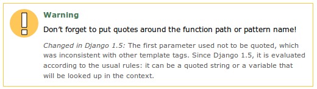

From Ryan Kaskel‘s talk at Django London in November last year, I guessed that upgrading the Action Guide code from Django 1.4 to 1.5 might have created some issues with users (user models have changed in Django 1.5 to allow more customisation).
However, as it turns out, the main problems were with settings and urls, the users were fine. My main take-aways were:
Url formats have changed - now need quotes
The Django team had already updated the url tag to accept the path parameter as a string, but the old syntax was still allowed. 1.4 allowed both types of syntax, the team having provided {% load url from future %} for those that wanted to update their templates to the new syntax.
Here’s the warning from the URL tag documentation.
This was a reasonably easy change to implement - some search and replace and all url tags can be easily hunted down and changed.
Read up on the settings - no ALLOWED_HOSTS makes 500s
This was the real killer.
There is a new ALLOWED_HOSTS settings in 1.5 required to get Django and running in non-debug mode.
Worst thing about the implementation of this new setting is that I couldn’t get a single bit of debugging output it through wsgi on WebFaction - just a 500 error on every page load when I took the site out of debug mode.
I was so confused that I posted this question on StackOverflow, thinking the problem was url warnings being shown as errors and halting the wsgi. In the end, just adding ALLOWED_HOSTS fixed everything up great.
My main problem was that I scanned the docs, tested the migration on localhost in dev mode, and just expected everything to deploy. With Captain Hindsight, I’d have RTFMed much harder before deploying - a lesson for the future.
Apart from that, everything works really well. Have fun!
Comments